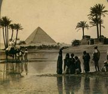
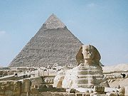
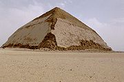
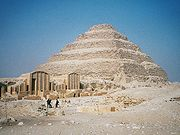

Египетские пирамиды – величайшие архитектурные памятники Древнего Египта, среди которых одно из «семи чудес света» – пирамида Хеопса. Пирамиды представляют собой огромные каменные сооружения пирамидальной формы, использовавшиеся в качестве гробниц для фараонов Древнего Египта. Слово «пирамида» – греческое. По мнению одних исследователей, большая куча пшеницы и стала прообразом пирамиды. По мнению других ученых, это слово произошло от названия поминального пирога пирамидальной формы. Всего в Египте было обнаружено 118 пирамид (на ноябрь 2008 года).
При упоминании египетских пирамид, как правило, имеют в виду Великие Пирамиды, расположенные в Гизе, неподалеку от Каира. Но они не являются единственными пирамидами в Египте. Многие другие пирамиды гораздо хуже сохранились и сейчас напоминают холмы или груды камней. В период первых династий появляются специальные «дома после жизни» – мастабы – погребальные здания, состоявшие из подземной погребальной камеры и каменного сооружения над поверхностью земли. Сам термин относится уже к арабскому времени и связан с тем, что форма этих похожих в разрезе на трапецию гробниц напоминала арабам большие скамьи, называвшиеся «мастаба». Мастабы строили для себя и первые фараоны. Древнейшие царские мастабы, относящиеся ко временам I династии, сооружались из адобов – необожженных кирпичей из глины и/или речного ила. Они строились в Нагаде и Абидосе в Верхнем Египте, а также в Саккаре, где находился главный некрополь Мемфиса, столицы правителей первых династий. В наземной части этих построек находились молельни и помещения с погребальным инвентарем, а в подземной – собственно погребальные камеры.
 Самой большой является пирамида Хеопса. Первоначально ее высота составляла 146.6 м, однако из-за того, что сейчас отсутствует облицовка пирамиды, ее высота к настоящему времени уменьшилась до 138.8 м. Длина стороны пирамиды – 230 м. Постройку пирамиды датируют XXVI веком до н. э. Предположительно, строительство длилось более 20 лет.
Пирамида сложена из 2.3 млн. каменных блоков, которые были подогнаны друг к другу с непревзойденной точностью. При этом не использовался цемент или другие связующие вещества. В среднем блоки весили 2.5 тонн, но в «Камере Царя» есть гранитные блоки массой до 80 тонн. Пирамида является практически монолитным сооружением – за исключением нескольких камер и ведущих к ним коридоров. По мнению Геродота, который первым подробно описал пирамиды Гизы, на строительстве пирамиды Хеопса были заняты 100 000 рабов, однако эти данные представляются очень сомнительными. Возможно, пирамиды возводили крестьяне, свободные во время разливов Нила от полевых работ. Возведение пирамид было, видимо, своего рода трудовой повинностью – в виде государственного налога. Строители получали оплату за свой труд. За последние двадцать лет археологами было откопано поселение, в котором жили строители пирамиды. Оно было отделено от сакральной части плато Гизы, где расположены великие пирамиды, стеной. В деревне имелось две хлебопекарни, сушильня для рыбы и даже пивоварня. А также в руинах вокруг пирамид были обнаружены тысячи фрагментов крупного рогатого скота. Строители были не рабами, о них очень хорошо заботились.
Судя по найденным в поселении строителей надписям и рисункам, можно предположить, что рабочие трудились в командах, между которыми даже проводилось нечто вроде «соревнования». Найденные на кладбище этого поселения останки умерших строителей свидетельствуют о том, что при жизни они занимались тяжелым физическим трудом. Но однако кости рабочих свидетельствуют о том, что многие успешно перенесли различные травмы благодаря высокому уровню медицинского обслуживания.
Обнаруженные в начале января 2010 года новые захоронения строителей пирамид позволили ученым подтвердить теорию о том, что пирамиды возводили вольнонаемные рабочие. Также делается вывод, что на стройке одновременно было занято до 10 тысяч человек, при этом рабочие трудились сменами по три месяца.
Розовая пирамида – северная пирамида фараона Снофру в Дахшуре, на момент своего строительства в XXVI в. до н. э. являвшаяся самым высоким сооружением на Земле. По размерам уступает только двум египетским пирамидам в Гизе – Хуфу и Хафра. Историческое значение Розовой пирамиды состоит в том, что это первая царская усыпальница правильной стереометрической пирамидальной формы (хотя угол ее стороны имеет погрешность – только 43°36', в отличие от поздних норм – 51°52'). Хотя «розовая» усыпальница и считается первой «истинной» пирамидой, ей присущ чрезвычайно низкий наклон стен (основание 218.5 х 221.5 м. при высоте 104.4 м.). Название связано с тем, что известняковые блоки, из которых сложена пирамида, приобретают в лучах заходящего солнца розовый цвет. Вход через наклонный проход на северной стороне спускается в три смежные камеры, они все заполнены камнями и недоступны. Эта пирамида приписывается Снофру оттого, что на нескольких блоках обшивки красной краской начертано его имя.
 Пирамида Хефрена (точнее – Хафры) – вторая по величине древнеегипетская пирамида. Расположена рядом с Великим Сфинксом, а также пирамидами Хеопса (Хуфу) и Микерина в Гизе. Построенное в сер. XXVI в. до н. э. сооружение (215.3 x 215.3 м и высота 143.5 м) получило название Урт-Хафра («Хафра Великий» или «Почитаемый Хафра»).
 Ломаная пирамида – египетская пирамида в Дахшуре, возведение которой приписывается фараону Снофру (XXVI в. до н. э.) Для объяснения нестандартной формы пирамиды немецкий египтолог Людвиг Бурхардт (1863 – 1938) предложил свою «теорию приращивания». Согласно ей, царь умер неожиданно и угол наклона граней пирамиды был резко изменен с 54°31' до 43°21', чтобы быстро закончить работу. Курт Мендельсон предложил альтернативу: пирамида в Мейдуме и южная пирамида в Дахшуре были построены одновременно, но случилась авария в Мейдуме – возможно, после дождей облицовка обрушилась – и этот инцидент заставил спешно изменить угол наклона сторон пирамиды в Дахшуре, когда она была построена уже наполовину.

Постройка датируется приблизительно 2670 годом до нашей эры, с виду напоминает несколько поставленных
друг на друга мастаб уменьшающегося размера. Скорее всего, именно таков и был замысел архитектора этой пирамиды,
Имхотепа. Имхотеп разработал способ кладки из тесаного камня. Впоследствии египтяне глубоко почитали зодчего первой
пирамиды, и даже обожествили его. Он считался сыном бога Птаха, покровителя искусств и ремесел.
Пирамида Джосера расположена в Саккаре, к северо-востоку от древнего Мемфиса, в 15 км от Гизы. Ее высота
составляет
62 м.
| Название пирамиды | Династия фараонов | Дата постройки (г. до н.э.) | Высота пирамиды (м) |
| Пирамида Хеопса | Снофру | 2612-2589 | 146,6(138,8) |
| Розовая пирамида | Снофру | 2612-2589 | 104,4 |
| Пирамида Хефрена | Хафра | 2558-2532 | 143,5 |
| Ломаная пирамида | Снофру | 2612-2589 | 143,5 |
| Пирамида Джосера | Джосер | 2630-2612 | 62 |